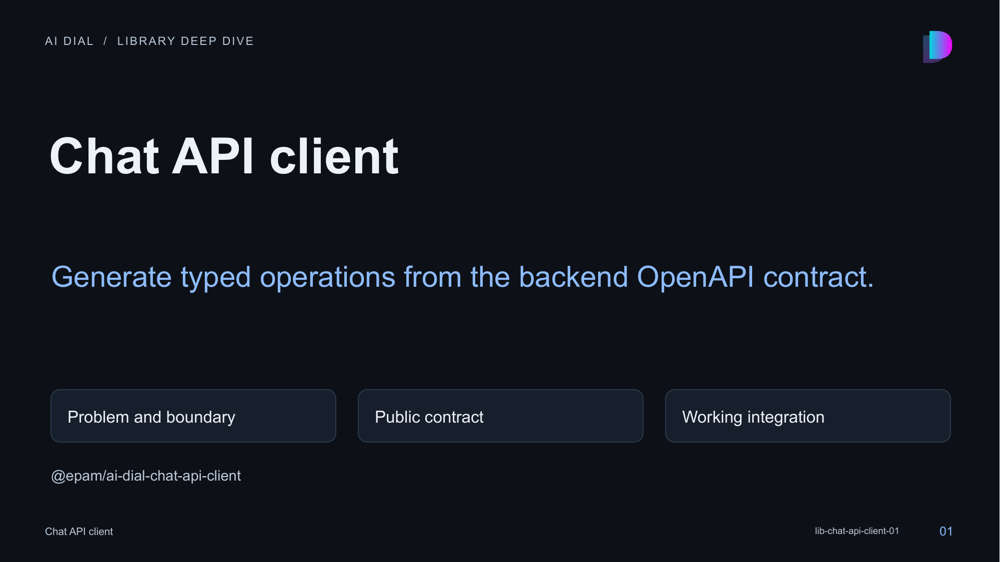

01 · Chat API client

Speaker notes and sources
This session explains generate typed operations from the backend openapi contract. The library is a local private workspace package at libs/chat-api-client. Its manifest, source exports, tests and actual consumers were inspected. Package publication has not been verified; use the workspace integration shown here.
- libs/chat-api-client/README.md:1-68
- libs/chat-api-client/src/index.ts:1-1
- libs/chat-api-client/package.json:1-41
- libs/chat-api-client/src/generated/src/apis/DeploymentsApi.ts:43-250